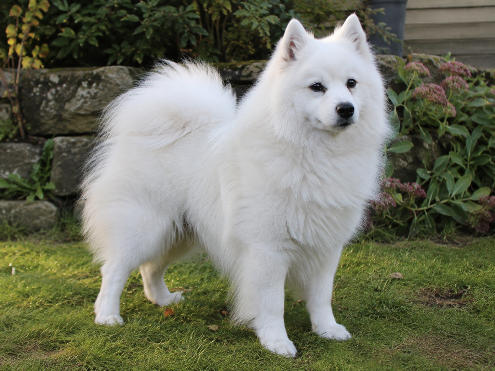
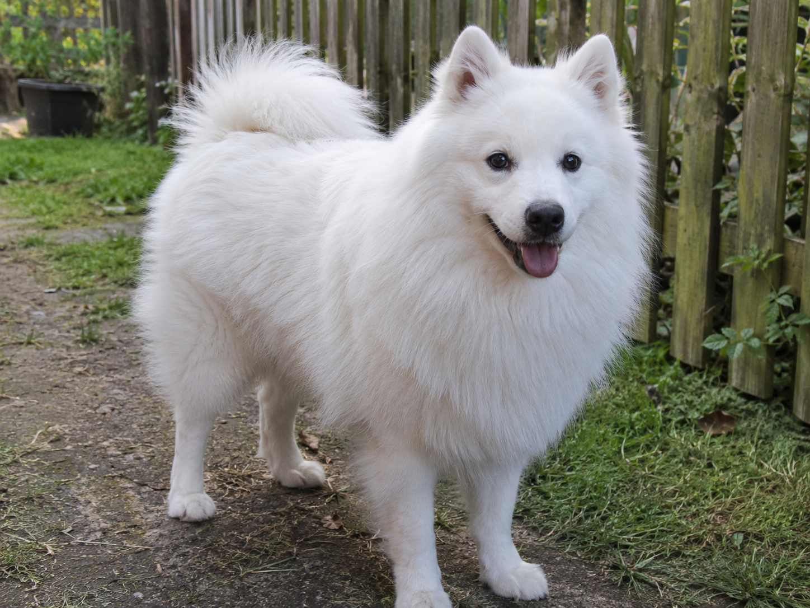
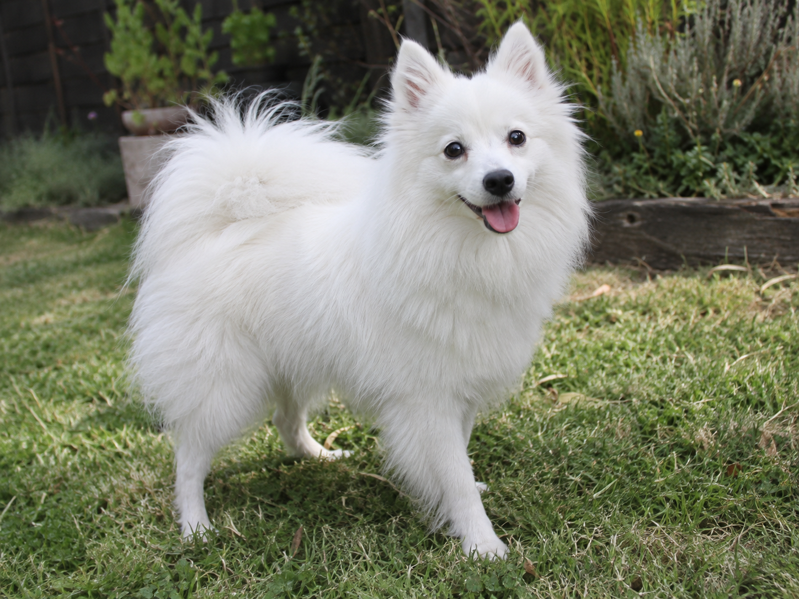
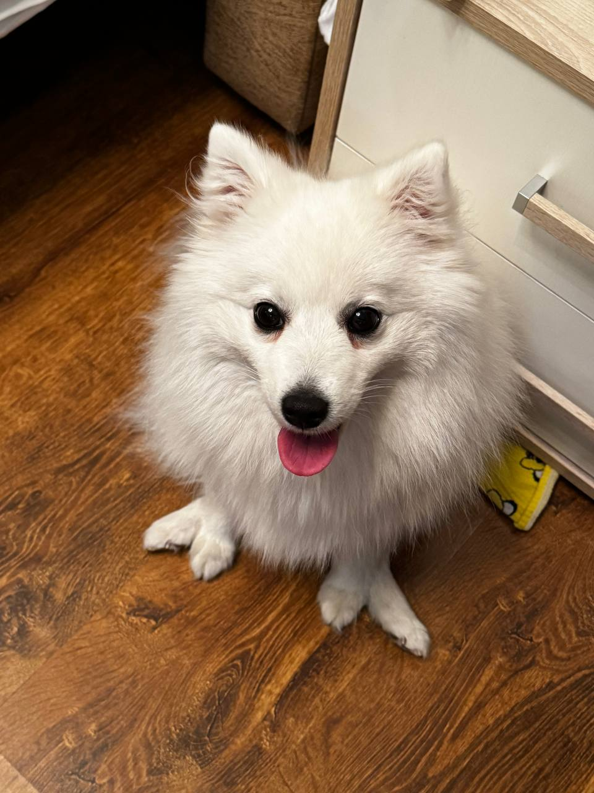

Archie Sunny Paws Archie
- Дата рождения
- 14.03.2021
- Окрас
- белый
- Пол
- кобель
- Характер
- спокойный, контактный
Archie - уравновешенный кобель с дружелюбным характером и хорошим контактом с человеком.
Тел.: +7 (999) 123-45-67
Ежедневно с 10:00 до 19:00
Главная → Наши собаки
В этом разделе представлены взрослые собаки питомника: кобели и суки, участвующие в племенной работе.

Archie - уравновешенный кобель с дружелюбным характером и хорошим контактом с человеком.

Baron более активный по темпераменту, любит прогулки и занятия.

Grace - спокойная и очень ориентированная на человека собака.

Alma хорошо адаптируется к новым условиям и отличается спокойным поведением.

Аста живёт вместе с собаками питомника и не участвует в племенной работе.
Ниже показано дерево на три поколения.